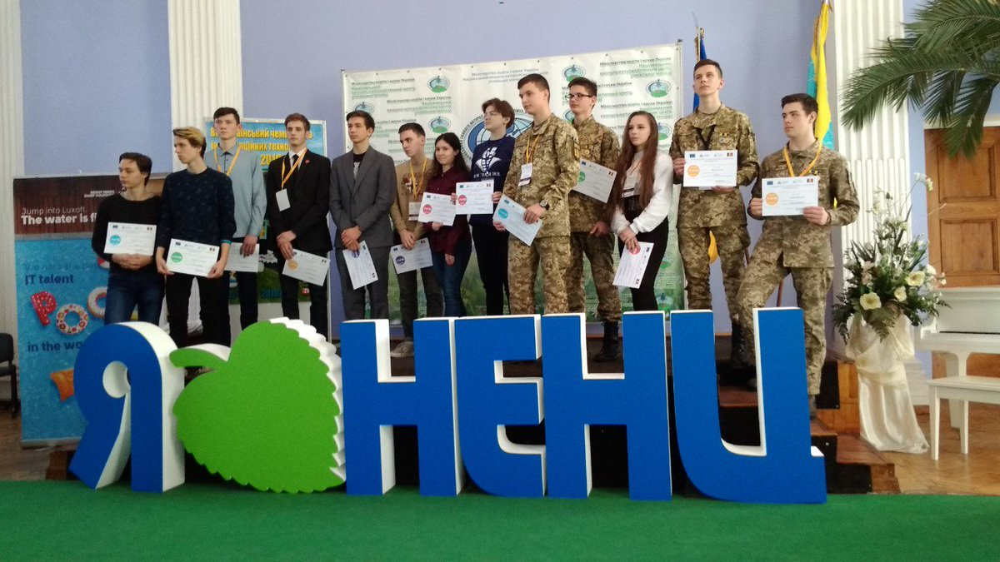

Українська команда здобула перемогу на Міжнародному конкурсі комп’ютерних проектів серед учнівської та студентської молоді «INFOMATRIX – 2017», який проходив у м. Бухаресті (Румунія).

Цього року змагання проводились у 5 категоріях:
- програмування;
- інформаційна інженерія;
- робототехніка;
- комп’ютерне мистецтво;
- короткометражний фільм.
«Срібло» отримали:
- Катерина Жикова, учениця 10 класу Одеської загальноосвітньої школи № 65 І-ІІІ ступенів Одеської міської ради Одеської області, з авторською розробкою «Серія «Флора та фауна»;
- Михайло Мулько, учень 8 класу Міжнародної школи І-ІІІ ступенів «Меридіан» м. Київ, з авторською розробкою «Faster».
«Бронзу» вибороли:
- Даніїл Шмідт, учень 10 класу Житомирської загальноосвітньої школи І-ІІІ ступенів № 17, з авторською розробкою «Розумійка»;
- Анна Іноземець, учениця 8 класу Черкаської спеціалізованої школи І-ІІІ ступенів № 3 Черкаської міської ради Черкаської області, з авторською розробкою «Мама – не просто слово»;
- Ігор Жуковський, Михайло Корешков, Георгій Лобанов, учні 10 класу Політехнічного ліцею НТУУ КПІ ім. І. Сікорського, з авторською розробкою «DoubleAbstragation» («QThing»);
- Павло Мікуш, учень 10 класу Києво-Печерського ліцею № 171 «Лідер» (м. Київ), з авторською розробкою «Universal Robotic Assistant for people with visual disabilities»;
- Артур Вашакідзе, студент II курсу Державного навчального закладу «Київський професійний коледж з посиленою військовою та фізичною підготовкою», з авторською розробкою «Цифровий освітній ресурс «Діагностика автомобілів».